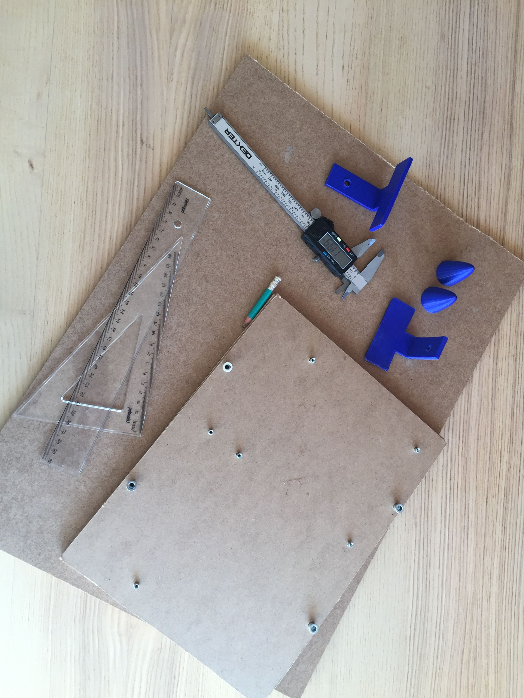

Construisons la nouvelle informatique.
Avec le projet Balthasar nous vous proposons de batir des ordinateurs à la fois plus Ergonomique, Écologique et Esthétique.
Un OP (ordinateur personnel) qui s'inscrit dans l'éco-système de votre bureau ou de votre espace de vie.
Fait avec des matériaux recyclabe, bois, métal et plastique de type PLA (amidon de maïs).

Notre projet se veut être modulaire et donc évolutif,
vous pourrez changer facilement les pièces de votre ordinateur au gré de vos envies ou besoins.
Enfin nous souhaitons avoir près de nous des OP ouverts et non fermés, car nous ne souhaitons pas être en possesion de boîtes noires, mais d'objets ouverts que chacun puisse prendre et comprendre.